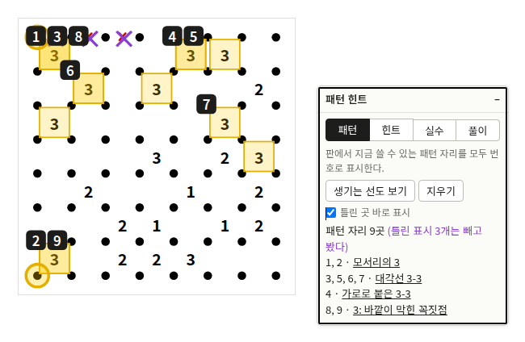

힌트 확장 프로그램
puzzle-loop.com에서 쓰는 도우미. 얼마나 도와줄지 네 단계 중에 고른다. 패턴 자리만 짚어 주는 것부터 끝까지 풀어 주는 것까지.

loop-hint.zip 내려받기 Chrome, Edge, Whale, Firefox 128 이상
도움 단계
패널 맨 위에서 고른다. 고른 단계는 다음 퍼즐에도 그대로 남는다.
| 패턴 | 판에서 지금 쓸 수 있는 패턴 자리를 모두 번호로 표시하고, 번호별 패턴 이름을 보여 준다. 답은 안 보여 준다. 생기는 선도 보기를 누르면 각 패턴으로 생기는 선과 x까지 보인다. 남은 변 세기와 점 규칙처럼 너무 기본적인 것은 뺐다. |
|---|---|
| 힌트 | 힌트를 누르면 가장 쉬운 다음 한 수를 찾아 볼 곳만 노랗게 표시한다. 보여주기를 누르면 그 한 수로 생기는 선과 x가 빨갛게 나온다. |
| 실수 | 힌트는 없다. 선이나 x를 그릴 때마다 정답과 비교해서 틀린 것만 보라색으로 표시한다. |
| 풀이 | 한 수는 다음 한 수를 판에 직접 둔다. 끝까지는 정답을 전부 그린다. 정답 겹쳐 보기는 판은 그대로 두고 정답 선을 파랗게 겹쳐 보여 준다. 판에 둔 수는 사이트의 되돌리기(↶)로 취소할 수 있다. |
틀린 곳 바로 표시를 켜 두면 패턴, 힌트, 풀이 단계에서도 틀린 선이나 x가 생기는 즉시 보라색으로 표시된다. 예를 들어 패턴 단계에 이것만 켜 두면, 패턴 자리를 보면서 풀다가 틀리는 순간 바로 알 수 있다. 패턴 단계는 틀린 표시를 지운 셈 치고 패턴을 찾는다.
패턴 이름을 누르면 패턴 정리의 해당 설명이 열린다. 힌트와 한 수는 0 → 판 모서리 → 붙은 3 → 남은 변 세기 → 점 규칙 → 꼭짓점 규칙 → 작은 고리 금지 → 짝수 통과 → 가정해 보기 순서로 찾는다. 판에 틀린 표시가 있으면 힌트 대신 그것부터 알려 준다.
풀이의 끝까지로 다 맞추면 사이트가 바로 풀었다고 기록하고 결과 화면으로 넘어간다. 순위에 올라가는 판에서는 도움 없이 푸는 게 좋다.
Chrome에 설치
- loop-hint.zip을 받아 지우지 않을 폴더에 푼다. 예:
문서/loop-hint. 크롬은 이 폴더를 계속 읽으므로 지우면 확장도 사라진다. 폴더 안에manifest.json이 바로 보여야 한다. - 주소창에
chrome://extensions를 연다. - 오른쪽 위 개발자 모드를 켠다.
- 왼쪽 위 압축해제된 확장 프로그램을 로드를 누르고 1에서 푼 폴더를 고른다.
- 목록에 "슬리더링크 패턴 힌트"가 보이면 끝. 이미 열려 있던 puzzle-loop.com 탭은 새로고침한다.
Edge는 edge://extensions, Whale은 whale://extensions에서 같은 방법으로 설치한다. 크롬을 켤 때 개발자 모드 확장 경고가 뜰 수 있는데 무시해도 된다.
업데이트
새 zip을 받아 같은 폴더에 덮어쓰고, chrome://extensions의 확장 카드에서 새로고침(↻) 버튼을 누른다.
Firefox에 설치
about:debugging#/runtime/this-firefox를 열고 임시 부가 기능 로드로 zip 파일을 고른다. 서명되지 않은 부가 기능이라 브라우저를 끄면 사라진다.
어떻게 동작하나
puzzle-loop.com 페이지가 들고 있는 판 상태를 읽어서, 패턴 정리에 있는 규칙을 쉬운 순서대로 대 본다. 처음 들어맞는 규칙이 힌트가 된다. 서버로 아무것도 보내지 않고 브라우저 안에서만 계산한다.
사이트의 5×5부터 30×40까지 여러 크기로 시험했을 때, 힌트만 따라가도 모두 끝까지 풀렸고 정답과 어긋난 힌트는 없었다. 소스는 GitHub에 있다.